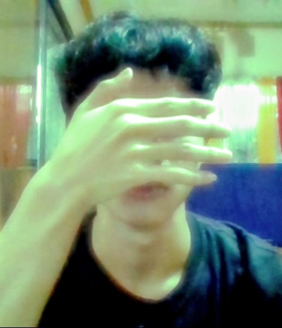

Draco
An observer of moving images, fleeting moments, and everything in between.
About

I edit the way some people write letters they never send — slowly, and mostly about what is left out.
I’m a film editor, video editor and content creator working from the Philippines. My interest is in the pause between shots: the cut that arrives a beat late, the colour that lingers after the scene has gone.
I come to the edit through cinema and literature — Wong Kar-wai’s rain-soaked corridors, the quiet of Japanese novels, the grain of analog photographs. These are references, not credits; they are simply where I learned to look.
Selected Works
The Frames That Stay
Practice
Selected Milestones
180K+
16